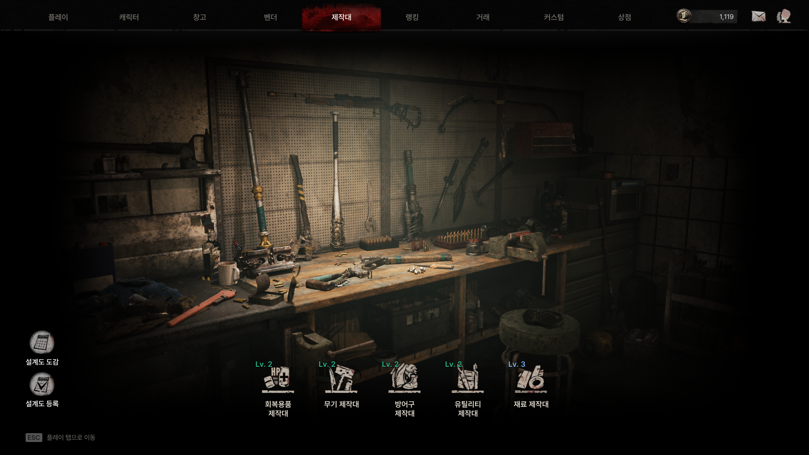
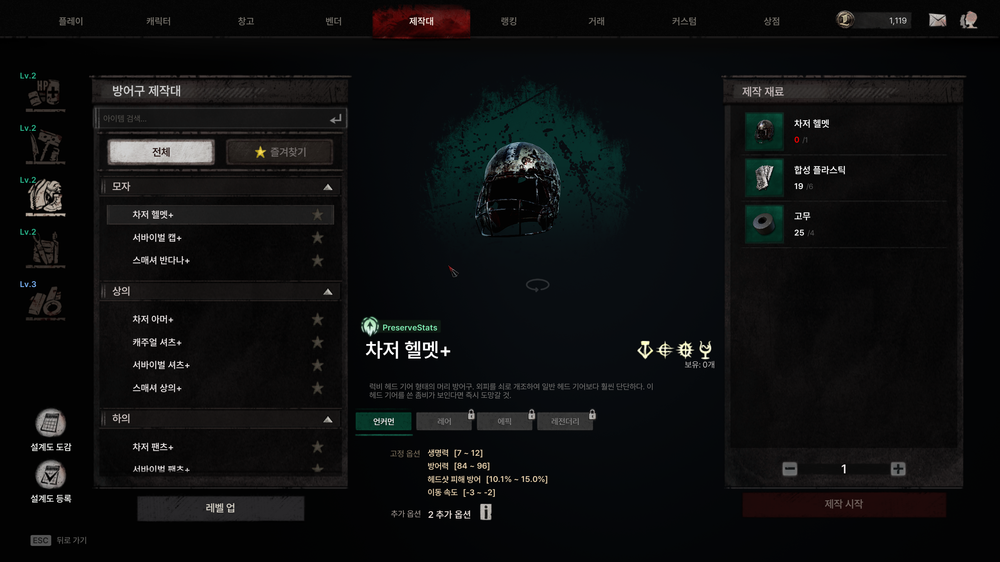
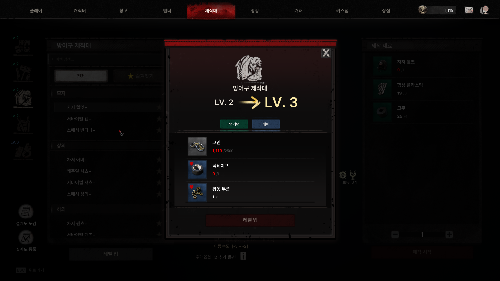
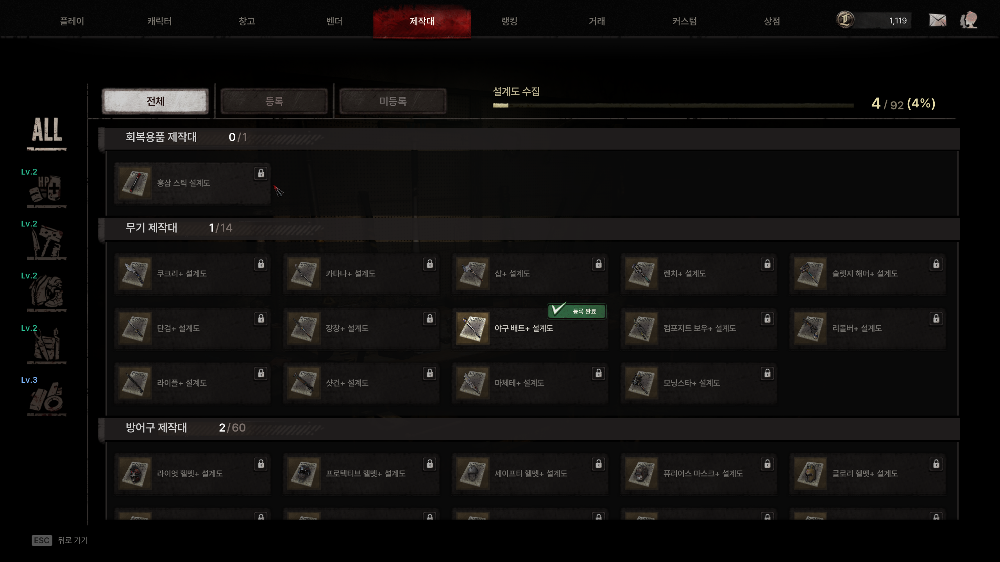

DESIGN & PROTOTYPE
🛠️ 제작대 리뉴얼
OneWayTicketStudio · The Midnight Walkers: 제작(Craft) 시스템 리뉴얼 기획
아래 기획 내용은 실제 사내 기획서를 바탕으로 시스템 설계 흐름을 정리한 요약본입니다. 실제 아이템/재료/확률 수치, 사내 문서 링크 등
민감한 데이터는 제외했습니다.
동작하는 프로토타입 보기 →
🖥️ PC 브라우저 권장 (모바일 비율 미지원)
개요
기존 제작(Craft) 시스템을 목적별 5종의 제작대(회복 / 무기 / 방어구 / 유틸리티 / 재료)로 분리하고, 제작대 자체가 잠금 해제 → 레벨업을 통해 성장하며 제작 가능한 아이템 등급이 넓어지는 구조로 리뉴얼했습니다. 여기에 상위 장비를 얻기 위한 설계도(Blueprint) 수집·등록 시스템을 결합해, 파밍의 목적성과 장기 수집 동기를 함께 설계했습니다.
화면

제작대 선택 화면: 5종 제작대의 잠금/해금 상태를 카드로 표시

제작 화면: 3단 레이아웃(카테고리 · 3D 프리뷰 · 재료 선택)

제작대 레벨업: 성장 연출과 함께 확장되는 제작 가능 등급

설계도 도감: 등록/미발견 상태별로 수집 현황을 시각화
성과
- 기존에는 제작대 자체가 아이템을 제작하는 콘텐츠로만 사용되던 구조였으나, 파밍 목적·수집·거래 요소를 결합한 구조로 개편
- 개편 이후 유저 이탈 시점이 평균 7일에서 18일로 변경 - 플레이 수명 증가로 이어짐
- 커뮤니티·디스코드에서 "할 거리가 늘어 플레이 동기가 살아났다"는 반응 확인, 설계도 수집 요소가 의도대로 작동했다고 판단
- 모든 장비를 직접 제작하던 구조를 "보유 장비 강화"로 전환해, 인게임 획득(파밍)과 제작대 성장(강화)의 목적을 분리 - 아이템 옵션 가치 상승과 함께 파밍 목적성이 더욱 뚜렷해짐
핵심 규칙
| 제작대 수 | 5종 (회복 / 무기 / 방어구 / 유틸리티 / 재료) |
|---|---|
| 초기 해금 | 회복 제작대만 기본 제공, 나머지는 재료를 모아 잠금 해제 |
| 최대 레벨 | Lv.5: 레벨이 오를수록 제작 가능한 최대 등급이 확장 |
| 제작 방식 | 즉시 제작 (대기열/제작 시간 없음, 2단계 연출로 즉시성 보완) |
| 장비 재료 | 레시피당 1종 1개 사용, 스탯은 결과물에 항상 승계 |
| 설계도 | 등록 시 인벤토리에서 소모, 이후 해당 레시피 영구 해금 |
| 수령 위치 | 창고(Stash) 고정 지급 |
| 저장 범위 | 계정 단위 저장 (같은 계정의 모든 캐릭터가 공유) |
| 재화 비용 | 없음: 아이템 재료만으로 제작 |
주요 기능
- 다중 제작대: 5종으로 분리하고, 어떤 제작대에 어떤 레시피가 속하는지는 데이터로 자유롭게 설정 (카테고리 강제 매핑 없음)
- 제작대 성장: 잠금 해제 + 레벨 1~5, 레벨에 따라 제작 가능한 최대 등급이 확장
- 설계도 시스템: 설계도 획득 → 등록 → 레시피 해금의 흐름, 수집 현황을 도감으로 시각화
- 즉시 제작 연출: 대기 시간을 없애는 대신 2단계 연출(타격 → 완성)로 제작의 무게감을 보완
- 장비 재료 제작: 보유 장비를 재료로 사용해 다른 등급의 장비를 만드는 교차 등급 제작 지원
- 수량 조절: 제작 횟수 단위로 한 번에 여러 개 제작 가능
- 성장 가능 상태 표시: 잠금 해제·레벨업이 가능해지는 순간 실시간으로 시각 피드백
- 3D 아이템 프리뷰: 제작 화면 중앙에 선택한 아이템의 3D 모델을 표시, 마우스 드래그로 회전 가능
- 알림(레드닷): 미등록 설계도 / 잠금해제 가능 / 레벨업 가능 중 하나라도 해당되면 진입점에 표시
UI 구조
App
├── TopNav
├── 제작대 선택 화면
│ ├── 제작대 카드 (잠금 / 해금 / 해금 가능 상태)
│ ├── 잠금 해제 확인 팝업
│ └── 설계도 등록 퀵 액세스
├── 제작 화면 (3단 레이아웃)
│ ├── 좌: 제작대 탭 + 카테고리 + 아이템 필터
│ ├── 중: 3D 프리뷰 존 + 레시피 상세
│ └── 우: 장비 재료 선택 패널
├── 설계도 도감 화면
│ ├── 탭 (전체 / 등록 / 미발견)
│ └── 카드 그리드 (상태별 표시)
└── 공통: 토스트 알림 · 잠금해제/레벨업 연출 · 범용 팝업
데이터 구조
6개 테이블로 제작대 정의·성장·레시피·재료를 분리 설계했습니다. → 인터랙티브 다이어그램으로 컬럼 관계 보기
| 제작대 정의 | 제작대 종류, 초기 해금 여부, 최대 레벨 등 기본 정보 |
|---|---|
| 제작대 레벨 | 레벨별 요구 재료와 레벨업 시 확장되는 제작 가능 등급 |
| 제작 레시피 | 결과 아이템, 필요 재료(또는 설계도), 소속 제작대 |
| 통합 재료 | 잠금 해제·레벨업·제작에서 공통으로 쓰는 재료 묶음 (재화/아이템 통합) |
| 재료 타입 열거형 | 재료가 재화인지 아이템인지 구분 |
| 공용 상수 | 재료 최대 종류 수 등 시스템 전역 설정값 |
연출 · 사운드 디자인
즉시 제작 방식으로 대기 시간을 없앤 대신, 제작 단계마다 짧은 연출과 사운드 콘셉트를 붙여 손맛과 성장감을 보완했습니다.
| 제작대 선택 화면 진입 | 공방에 들어서는 느낌: 문 열리는 소리 + 앰비언스 |
|---|---|
| 제작대 잠금 해제 | 새로운 것이 열리는 임팩트: 자물쇠 열림 + 금속 임팩트 |
| 레벨업 | 성장·강화되는 느낌: 전용 이펙트음 + 차임 |
| 설계도 등록 | 새 지식을 습득하는 느낌: 종이 펼침 + 스탬프 |
| 제작 중 (타격 단계) | 타격감 있는 제작 과정: 망치 타격 + 스파크 |
| 제작 완성 | 짧고 명확한 완료 피드백: 완성 임팩트 + 빛 효과음 |
설계 반복 하이라이트
초기제작대별 레시피와 재료 구조를 설계하고, 클릭 가능한 프로토타입으로 3단 레이아웃 제작 화면을 먼저 검증
개정등급 범위(최소~최대) 방식을 "해당 등급 이하 모두 제작 가능"한 단일 최대 등급 방식으로 단순화 - UI 표기도 범위 텍스트에서 등급 색상 뱃지로 변경
개정3D 아이템 프리뷰를 고정 앵글에서 마우스 드래그 회전이 가능하도록 사양 변경, 프로토타입에 반영
개정탑바 진입점에 레드닷(알림) 표시 조건을 3가지로 정의해 성장 가능 상태를 놓치지 않도록 보완
정리기획서 전반의 String(다국어 텍스트) 키를 전수 점검해 중복·누락을 정리하고 최종 목록을 확정